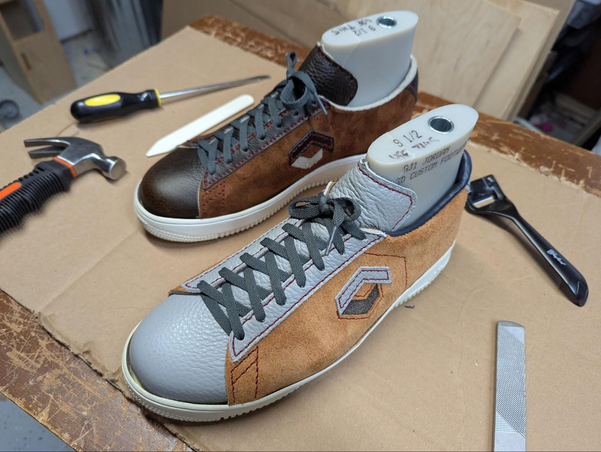
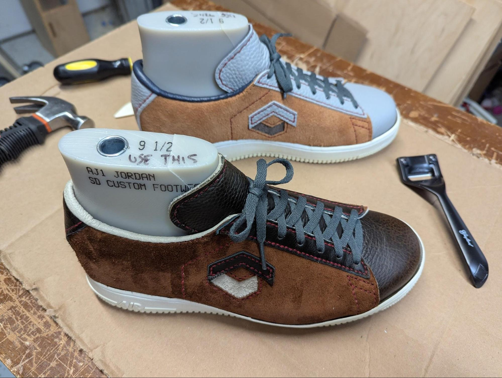

NAVIGATION > MTWABP > BASIC HUMAN NEEDS > CLOTHING > SHOES > SUSTAINABLE SNEAKER
© 2025 BRIAN COX. All Rights Reserved
Contact: brian90254 at gmail dot com
Sustainable Sneaker
 
OVERVIEW:
This custom shoe is based on the traditional sneaker design, and can be made with scrap upholstery leather. It utilizes high quality soles reclaimed from otherwise thrashed AF1’s, and the very act of making the sneaker yourself means that you’ll also know how to repair it.
- Traditional sneaker design has a very basic construction that’s relatively easy to create.
- Using the AF1 shoe last makes for a generally more comfortable, and wearable, shoe.
- The individual panel pieces are small enough to utilize large-sized scraps that are readily available.
- Hand stitching takes extra time, but doesn’t require specialized sewing equipment.
- Construction requires minimal skill, enabling a lifetime of relatively easy repair.
HOW-TO:
STEP ONE:
STEP TWO:
- LEATHER SOURCES
- LASER CUTTING
- CLICK CUTTERS
STEP THREE:
- SEQUENCE OF CONSTRUCTION
- TOOLS AND THREAD
- HAND STITCHING TECHNIQUE
STEP FOUR:
- OTHER PARTS YOU’LL NEED
- INSTALLING MUSTACHE AND HEEL
- PLIERS AND NAILS
STEP FIVE:
STEP SIX:
- MOUNT SOLE, REMOVE FROM LAST
STEP SEVEN:
STEP EIGHT:
- TRIM INSERT, APPLY LACES, DONE!